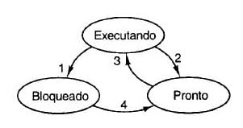

◉ Deadlock
Formalmente, Deadlock é definido da seguinte forma: Um conjunto de processos do Sistema Operacional está em
situação de Deadlock se todo processo pertencente ao conjunto estiver esperando por um evento que somente outro
processo desse mesmo conjunto poderá fazer acontecer.
Por exemplo, a figura acima. Temos carros em quatro sentidos diferentes. Os que estão no sentido "A" pedem
espaço para os que estão no sentido "B". Mas o pedido é negado. E em vez de liberar espaço para os que estão
no sentido "A", os que estão no sentido "B" solicitam espaço para os que estão no sentido "C". Mas o pedido
é negado. E em vez de liberar espaço para os que estão no sentido "B", os que estão no sentido "C" solicitam
espaço para os que estão no sentido "D". Mas o pedido é negado. E em vez de liberar espaço para os que estão
no sentido "C", os que estão no sentido "D" solicitam espaço para os que estão no sentido "A". E assim, estamo
em um impasse, ou seja, em Deadlock.
◉ Condições para ocorrência de Deadlock
Assim, nenhum processo consegue executar recurso que precisa, ou liberar recurso que está de posse, ou ser
acordado, pois o recurso que precisa está ocupado.
Vale detalhar que recurso é uma sequência de eventos necessários ao uso de um processo, assim pode ser
dispositivos ou qualquer item compartilhado.
As condições para se entrar no estado de Deadlock:
• Exclusão Mútua: todo recurso está ou associado a um único processo ou disponível;
• Posse e Espera: processos que retêm recursos podem solicitar novos recursos;
• Não Preempção: recursos concedidos previamente não podem ser forçosamente tomados;
• Espera Circular: deve haver uma cadeia circular de dois ou mais processos, na qual cada um está à espera de
recursos retido pelo membro seguinte dessa cadeia.
Todas essas condições devem ocorrer simultaneamente para que ocorra Deadlock. Se uma dessas condições não
ocorrer, não haverá deadlock.
◉ Tratamento para ocorrência de Deadlock
As formas de tratamento de Deadlock:
Ignorar por completo: Utilizar o Algoritmo Avestruz que é uma abordagem mais simples. "Enterre a cabeça na
areia e finja que nenhum problema ocorrerá.". Razoável se deadlocks ocorram muito raramente. Essa abordagem
não parece, mas é coerente já que tratamente de deadlock é muito custoso e supondo que os usuários preferem
um deadlock ocasional a uma regra restrigindo o sistema a um único processo, e assim um único arquivo
aberto, ou seja, um recurso de cada tipo.
Vale uma análise do cenário em que estamos e então avaliar e ponderar entre conveniência e correção. Sistemas
Operacionais de propósito geral como Windows e Unix adotam essa abordagem pois em caso de deadlock o usuário
terá abandonar o processo. Não gera tantos prejuízos quando comparados com sistemas de propósito específico
que são de alto risco, como por exemplo, controladores de aviões, equipamentos médicos;
➤ Detecção e Recuperação:
• Preempção: retirar um recurso de algum outro processo. Nesse método, cabe uma análise da natureza do recurso;
• Restauração de Estado: armazenar pontos de verificação de processos periodicamente para que esse estado salvo
sirva para restaurar o processo se este é encontrado em estado de deadlock;
• Eliminação de Processos: forma mais grosseira mas mais simples de quebrar um deadlock é eliminar um dos processos
no ciclo de processos em deadlock, assim os outros processos conseguirão seus recursos. Para eliminar o processo,
escolher um que possa ser reexecutado desde o início;
Evitar Dinamicamente: alocação cuidadosa de recursos, avaliando a chance de tal ação resultar ou não em deadlock;
Prevenção: é atacar uma das condições necessárias para se ter o estado de deadlock. Segue como acontece cada um
dos possíveis ataques. Atacando:
• Exclusão Mútua (usar spool em tudo): recursos, como impressoras, podem fazer uso de spool: - o daemon de
impressora é o único que usa o recurso impressora; - desta forma deadlock envolvendo a impressora é
eliminado. Nem todos os dispositivos podem fazer parte de spool: Princípio: evtar alocar um recurso quando
ele não for absolutamente necessário; tenta assegurar que o menor número possível de processos possa de fato
requisitar o recurso;
• Posse e Espera (requisitar inicialmente todos os recursos necessários): exige que todos os processos requisitem
os recursos antes iniciarem, assim um processo nunca tem que esperar aquilo que precisa. O problema dessa
mordomia é que podem não saber quantos e quais recursos vão precisar no início da execução e assim dimensionar
recursos que outros processos poderiam estar usando. Uma variação desse tratamento é que o processo deveria
desistir de todos os recursos para então requisitar todos os que são imediamente necessário;
• Não Preempção (retomar recursos alocados): esta é uma opção inviável. considere um processo de posse da
impressora, então no meio da impressão esse recurso é passado a outro processo, e num instante futuro retorna
a impressora a força;
• Espera Circular: ordenação numérica dos recursos.
Existe também o cenário de Deadlock sem envolvimento de recursos. Isso é possível que dois processos entre em
situação de deadlock se cada um estiver esperando que o outro faça algo. Pode ocorrer com semáforos quando
cada processo executa um down() sobre dois semáforos (mutéx, outro qualquer), se executados em ordem errada
resulta em deadlock.
Para melhor entendimento, iremos ver alguns detalhes sobre Processo.
◉ Processo
Um processo pode estar em um dos três estados: ou Bloqueado ou Pronto ou Executando. E um processo ao passar
de um estado a outro chamamos de transição. Então, o processo pode passar de bloqueado a pronto(4), pronto a
executando(3), executando para pronto(2), ou executando para bloqueado(1).
Segue abaixo uma figura que demonstra os estados e as transições possíveis de um processo.

Estados e Transições de um processo
Mais detalhes sobre os Estados de um processo:
Executando: o processo está usando a CPU naquele instante;
Bloqueado: o processo é incapaz de executar enquanto não ocorrer um evento externo;
Pronto: o processo está pronto para ser executado. Temporariamente parado para dar lugar a outro processo.
E mais detalhes sobre as Transições de um processo:
A transição 1 é quando o processo bloqueia aguardando uma entrada; a transição 2 é quando o escalonador
seleciona outro processo; a transição 3 é quando o escalonador seleciona esse processo e a transição 4 é
quando a entrada de dados torná-se disponível.